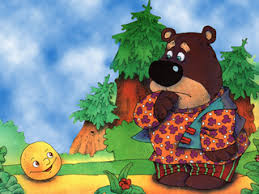

Катится Колобок, навстречу ему Медведь:
— Колобок, Колобок, я тебя съем!
— Где тебе, косолапому, съесть меня!

Я Колобок, Колобок,
Я по коробу скребен,
По сусеку метен,
На сметане мешон
Да в масле пряжон,
На окошке стужон.
Я от дедушки ушел,
Я от бабушки ушел,
Я от зайца ушел,
Я от волка ушел,
От тебя, медведь, подавно уйду!
И опять покатился — только Медведь его и видел!